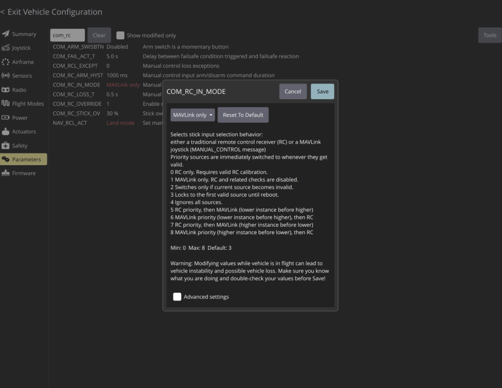

The Summary
QGroundControl (QGC) provides full flight control and mission planning for any MAVLink-enabled robot. The primary goal is to provide an easily editable user interface for the developer to configure. It serves as the primary ground control station for the PX4 autopilot stack.
QGC allows operators to plan complex autonomous missions on a desktop and also provides visual data coming from the vehicle.

Figure 1: High-level connection architecture between QGC and the Vehicle.
Technical Workflow: PX4 Integration
1. Installation
Installation directions at the QGC User Guide ↗.
# Ubuntu Permission Setup (User to dialout group)
sudo usermod -aG dialout $USER
# Remove modem manager (interferes with serial ports)
sudo apt-get remove modemmanager -y
# Install GStreamer (required for video streaming)
sudo apt install gstreamer1.0-plugins-bad gstreamer1.0-libav
2. Initial Configuration
Once QGC is running, connecting a vehicle's flight controller via USB automatically triggers the setup logic. The Vehicle Setup view (gear icon) is where the core configuration happens:
- Firmware: QGC detects the board (e.g. Pixhawk) and offers to flash the stable PX4 Pro stack.
- Airframe: Select the specific vehicle geometry (e.g. Hexarotor X, Quadcopter, VTOL) or custom, then "Apply and Restart".
- Sensors: A guided wizard walks you through calibrating the Compass (rotating the drone on all axes), Gyroscope (holding it still), and Accelerometer.
- Radio: Requires moving the transmitter sticks to their limits to map channels and set min/max values.
- Joystick: To enable joystick and disable RC mode, navigate to View → Parameters → search
COM_RC_IN_MODE.

Figure 2: Configuring COM_RC_IN_MODE to enable MAVLink joystick control.
3. Flight Modes & Safety
For PX4, you map specific RC switches to flight modes. A common setup involves a 3-position switch configured for:
- Position Mode: GPS-assisted hovering (easiest for beginners).
- Altitude Mode: Maintains height but drifts with wind.
- Return Mode: Automatically returns the drone to the launch point.
4. Mission Planning & Operation
The Plan View allows you to click on the map to place waypoints. For surveying, the "Pattern" tool automates the creation of grid flights for aerial mapping.
During flight, the Fly View displays the live video feed (if configured) and critical telemetry like battery voltage, satellite count, and altitude.
My Perspective
In the robotics ecosystem, the "user experience" is often an afterthought, but QGroundControl changes that narrative. While Mission Planner (the alternative GCS) offers incredibly deep parameters for debugging, QGroundControl shines in its modern, intuitive interface.
For field operations, the ability to run QGC on an iPad or Android tablet is a game-changer. It reduces the amount of heavy gear required and simplifies the pre-flight checklist. The touch-optimized interface makes dragging waypoints and adjusting mission parameters feel natural rather than technical.
Ultimately, if you are developing new vehicle types or need deep log analysis, you might stick to Mission Planner. But for reliable day-to-day operations and a setup workflow that doesn't require a manual to understand, QGroundControl is the superior choice.